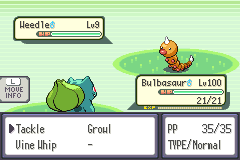
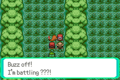
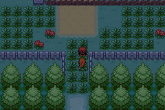

The overnight diagnostics + party-corruption session: one serious latent bug diagnosed and fixed, a self-serve test harness built, ghost sync proven under packet loss, and one spec gap uncovered.
| Item | Status | Where it lives |
|---|---|---|
Co-op battle party corruption — three destructive paths through gPlayerParty |
FIXED | stash / side-buffer / restore in multiplayer.c + scrcmd.c |
Field-trainer lock lifecycle — release moved to OnBattleEnd |
FIXED | commit 1a1416e9 (+ harness nav tools) |
| Diagnostics harness for cheap models — scripted scenarios + skill | SHIPPED | docs/TEST_PLAYBOOK.md, .claude/skills/coop-diag |
| Ghost position sync (R1) — clean run + 30% packet-loss chaos run | VERIFIED | test/reports/R1_run1.md, R1c_run1.md + evidence PNGs |
starter_denied never reaches the ROM — spec-vs-impl gap |
OPEN | relay arbitrates, bridge drops it, ROM has no handler |
CLAUDE.md amended — real battle-type flags, waitcoopparty stash step |
DONE | spec now matches BattleSetup_StartCoopBattle |
A gap flagged on 06-17 turned out to be worse than recorded — three independent ways a boss double battle could permanently damage your party.
CB2_CoopPartySelected reorders gPlayerParty[0..n] in place. With more than 3 mons, selecting a subset permanently overwrote unselected lead mons.
HandleRemotePartySync wrote the partner's mons straight into gPlayerParty[3..5] — possibly before you even opened your own menu, clobbering slots 3–5 of a big party pre-stash.
After the battle, nothing put anything back. Partner mons stayed in your party; your evicted mons were gone.
Mirrors how vanilla handles INGAME_PARTNER battles (CB2_EndDebugBattle) — three parts, one lifecycle.
ScrCmd_waitcoopparty calls SavePlayerParty() before the selection menu opens; selected slot indices are recorded in coopSelectedSlots[].
Partner party decodes into an EWRAM side buffer (sPartnerBattleParty) and only enters gPlayerParty inside Multiplayer_SetupCoopBattle — never earlier.
Multiplayer_OnBattleEnd writes each participant's post-battle exp/HP/status back to its original stash slot, then LoadPlayerParty(). Runs regardless of connState — the disconnect/grace path restores too.
TestRemotePartySyncStagesOutsidePlayerParty, TestCoopBattleEndRestoresParty.1a1416e9Follow-up to the #18a beacon work: the lock now releases in Multiplayer_OnBattleEnd, not the per-frame Update poll.
path_to / drive_to_tile, so test agents stop guessing tile counts.

Two-instance co-op testing no longer needs an expensive model driving every button press.
Scripted scenarios — R1 (Route 1 ghost sync), F1 (field-trainer lock), RB1 (rival co-op battle) — each with exact save states, button sequences, and per-check PASS criteria. Chaos variants included.
A skill that dispatches playbook scenarios to haiku subagents, which drive both emulator instances via MCP and write structured reports + evidence screenshots to test/reports/ and test/evidence/.
Haiku agents executed R1, R1c (chaos), F1, F1c unattended. The reports were good enough to separate a real-looking failure into "harness artifact" vs "actual bug" — see next slide.
wait on one instance freezes the other → no heartbeats → the relay legitimately declares a disconnect. Waits must be interleaved. This masqueraded as a ghost-despawn bug until diagnosed.set_link_chaos drop=0.3): ghost persisted through idle and movement — the state beacon repaired every dropped packet. 4/6 PASS, 0 FAIL.
starter_denied message goes nowhere OPENA spec-vs-implementation gap that only bites on the real relay — invisible to all MCP testing.
PartyKit server implements and tests starter_denied: on simultaneous same-species picks, first pick wins and the loser is told.
serial_bridge.rs maps the message to None — it is silently dropped on the floor.
No packet type, no handler. The slower player believes their pick succeeded → permanent starter desync between the two saves.
The party-corruption fix, playbook, coop-diag skill, tests, and evidence are all still in the working tree (~283 insertions across 9 files + new docs/skills). Only the trainer-lock commit (1a1416e9) landed. First order of business: commit & push.
starter_denied bridge gap (this session's find)